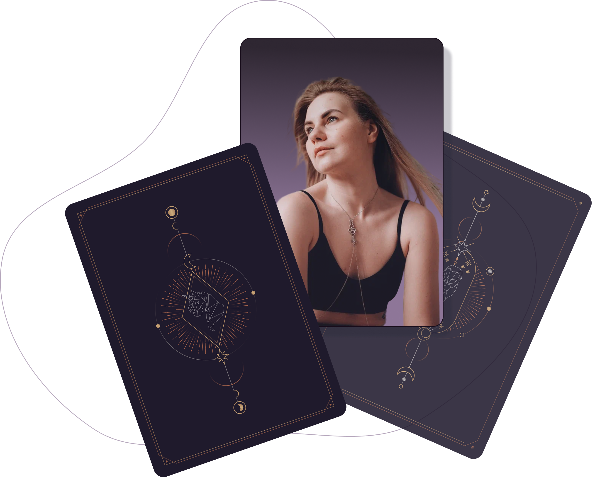

Татьяна Малахова
психолог, фасилитатор женских групповых программ, работающий в области личностного роста и гармонизации внутреннего состояния женщин
психолог, фасилитатор женских групповых программ
“Чем глубже я изучаю себя, тем яснее вижу”
“Моя работа — помочь тебе снова прикоснуться к себе настоящей”
Как я пришла в психологию
Меня зовут Малахова Татьяна, и я практикующий психолог, фасилитатор женских групповых программ, работающий в области личностного роста и гармонизации внутреннего состояния женщин.
Мой путь начался с изучения эзотерических дисциплин — с интереса к невидимому, к таинственным слоям бытия. Этот интерес стал фундаментом моей профессиональной и внутренней зрелости.
Со временем этот путь привёл меня к психологии — как к пространству, где душа может говорить на своём языке. Я выбрала процессуально-ориентированный подход, потому что он — про живое. Про человека как процесс, как танец, как уникальную историю, разворачивающуюся в каждом моменте.
Я умею видеть глубину там, где кажется — пустота. Силу там, где чувствуется только уязвимость. Свет там, где долго была тьма. Я не веду и не направляю. Я иду рядом — в моменты обнажённости, хрупкости, трансформации. Моя работа — помочь тебе снова прикоснуться к себе настоящей. К телу, к интуиции,к жизни.
С любовью. Без спешки. С уважением к твоему ритму.
“Мы - живые творения, сотканные из истории, любви и боли.
Каждое наше тело - уникально и прекрасно в своей неповторимости.”
Услуги и цены
-
Психологическое консультирование
Если вы чувствуете необходимость поддержки, желаете найти гармонию в жизни, понять себя, хотите разобраться в своих мыслях, я здесь, чтобы помочь вам на пути к внутреннему равновесию и самопониманию. Моя миссия — создать безопасное пространство, где вы сможете открыто говорить о своих проблемах и находить решения. Вместе мы преодолеем трудности и достигнем новых уровней самосовершенствования и внутренней гармонии.
-
Фокус-группа
Живой формат в малой группе, где мы вместе исследуем ваши нумерологические коды, вы сможете глубже понять себя, свои таланты, уроки и потенциал. Это не просто диагностика - это глубокое узнавание себя в зеркале чисел через диалог и обратную связь. Индивидуальное сопровождение для тех, кто хочет глубже изучить нумерологию и применять её в жизни или работе. Поддержка, обратная связь и рост на каждом этапе.
-
Нумерологический разбор, архетипы
Если вы готовы к самопознанию и новым открытиям, эта услуга поможет вам лучше понять себя, свои внутренние ресурсы и жизненные цели. Используя нумерологию, архетипы и Таро, я помогу вам найти ответы на важные вопросы, обрести гармонию и почувствовать внутреннюю поддержку. Это возможность заглянуть вглубь себя и сделать шаги к более осознанной и наполненной жизни.
-
Телесные практики
Эта услуга подходит тем, кто хочет лучше понять и услышать свое тело, снять напряжение и восстановить внутреннюю гармонию. Если вы ищете способы почувствовать себя более спокойно, сбалансировано и наполненно — я буду рада сопровождать вас на этом пути.